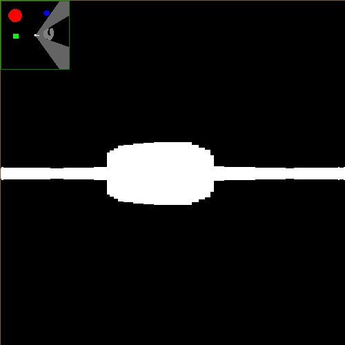

Sitting on the steps outside my high school while waiting for my mom to pick me up one day I wrote this simple raycasting "3D" renderer in Processing. It uses Bresenham's line algorithm to cast rays from the player's location while checking for collisions on a 2D grid. The distance to the first collision is used to set the size of the vertical lines drawn on the screen, which results in the 3D effect.